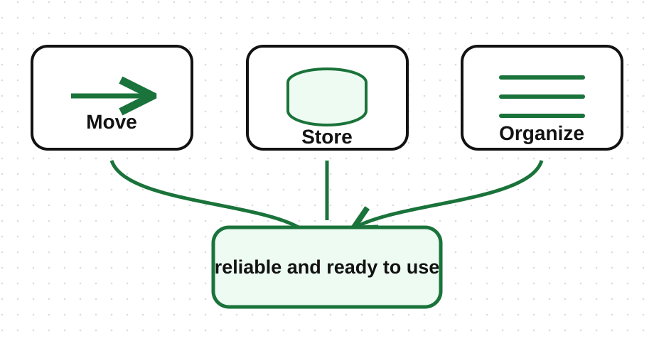
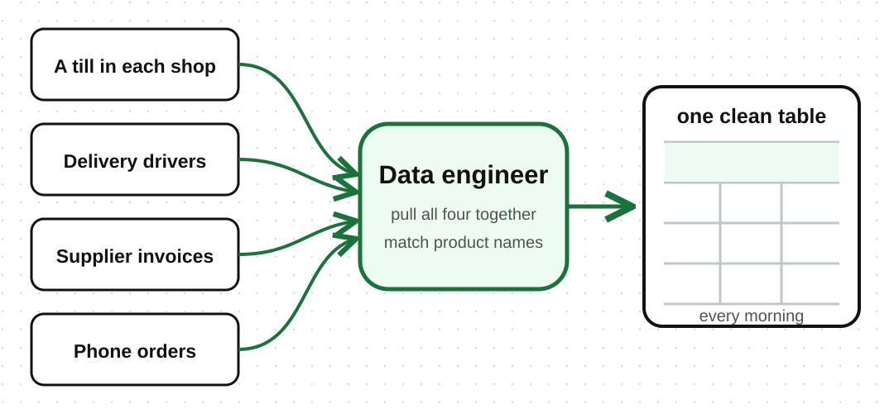

An analyst opens a report and finds three different versions of the same sales numbers: one old, one incomplete, one in the wrong format. The data exists, but nobody can trust it yet. Before analysts and data scientists can work with data, it must be collected, stored, and prepared in a way people can trust. That is the role of data engineering.
Data engineering focuses on building and looking after the systems that move, store, and organize data so it is reliable and ready to use.

Common responsibilities include:
If data analysis is about finding useful answers, data engineering is about making those answers possible.
The wholesaler from lesson 2 has data arriving from four places at once:
None of these agree on how a product is named, and two of them arrive late. A data engineer builds the pipelines that pull all four together, match the product names, and deliver one clean table that an analyst can actually use every morning, without someone doing it by hand every day.
